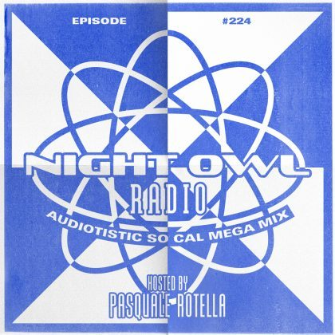

Cut From the Catalog: Subculture


Record labels have long been the gatekeepers of the dance music space, as they continuously define and reshape tastes via releases, endless talent scouting, and the curation of brand-hosted parties. In our Cut From the Catalog series, we big-up established and buzzing imprints alike by taking a look at the organizations’ ops while running through a retrospective mix built solely from their respective catalogs.
When Irish trance heavy John O’Callaghan (aka JOC) broke into the scene around a decade ago, his impact was considerable.
To get an idea of why he’s proved so popular and enduring, it’s important to look at his versatility as a DJ/producer. With his big breakthrough smash “Big Sky” in 2007, he showed he had the chops to craft a big crossover vocal anthem, and while the Agnelli & Nelson remix was the record reserved for peak-time, JOC’s original was a much deeper, progressive number, inspiring Armin van Buuren himself to fashion a special “intro” edit that leveraged its lush breakdown for all it was worth.
However, it was the other side of JOC’s musical persona that was making just as much of an impact. He showed quickly he had a certain knack for the tougher side of trance, with many of his productions just as much influenced by techno. It’s a tendency he often indulges under his special Joint Operations Centre pseudonym (note the acronym).
A few years later, in 2010, it was this exact versatility that inspired JOC to launch his Subculture label, a stable that has since been home to the whole spectrum of trance sounds you’ll hear in a John O’Callaghan set.
We sat down with Neal Scarborough, the Subculture label manager, to find out about the behind-the-scenes details of what goes into running a leading trance label in 2017.
What’s planned on the label side of things for this year?
We have a copious amount of good music scheduled to release over the summer months: Scottish talent Stephen Kirkwood makes his debut on the label with a ridiculously good EP. Our current release is from Maria Healy with an awesome Giuseppe Ottaviani remix. Throughout the remainder of the year we have releases from Bryan Kearney, Cold Blue, Shugz, Sneijder, and, of course, new music from John is on the way.
On the event side of things, we have just hosted sold-out shows in Sydney and Melbourne’s Hi Sense arena, and we are currently on our way Los Angeles for a sold-out show at the Belasco Theatre. We’ve just announced Buenos Aires, Argentina on November 4, where we will host a 9,000 capacity event at Malvinas Outdoor arena. We hope to announce some more European shows towards the end of the year, and also next year take Subculture to new markets.
How long have you been working with JOC and Subculture?
I first met John when I was 18. It was a mutual love for trance music that started our friendship. John was the first person I had met that was actually producing his own music. At the time, I had my own show on Dublin pirate radio and John used to come to the station with me to host the show. We started to produce music together and the Exertion and Inertia aliases were born. We have been working together ever since.
The world obviously knows Subculture as the label that’s led by John O’Callaghan. Looking beyond just his involvement, what’s the bigger story of the label and the other people (like yourself) that are working hard behind the scenes to get things happening?
Obviously, John fronts the label, but there are four on the team: John and I A&R the label and look after the creative side. Our office manager Emma looks after all administration and finance, whilst Rob and I work on our worldwide Subculture events.
This is all run from our headquarters in Dublin. We moved into our new premises in January, where we have built a state of the art studio and creative lab. This is also where we run Music First Agency and our YouTube channel. We like to call it “The Trance Hub of Ireland.”
JOC’s big breakthrough came in 2007, and he’d been producing for years before that. The launch of Subculture though came in 2010. What inspired him to head in that direction?
We wanted to have our own platform to release John’s music and to work more closely with artists we respect and are inspired by. Subculture was the first Irish trance label, and here we are seven years later, still going strong.
What are some of the benefits that fronting a record label offer to a high-profile DJ like JOC?
The main benefit is that it gives the artist far more control over his or her own music. This control brings freedom to be more creative. The most enjoyable aspect for me, though, is finding talent and helping them develop. We are in a position now where we can give these new artists a platform to grow and perform on a worldwide stage. Watching these artists put their own stamp on trance is hugely fulfilling and something I want to continue to do for as long as possible.
What was the vision for the label back in 2010 upon launch, and has this changed and evolved much over the years?
We wanted to play our part in pioneering new music and have a role in trance music. I look back at some of the labels that shaped trance music over the last 20 years: Hooj Choons, Vandit, BXR, Bonzai, Anjunabeats, and Armada. I have so much respect for what they have done and achieved. I hope in 20 years’ time that people will look back at Subculture and the artists involved, and say that we contributed to this amazing musical culture we are all lucky to be part of.
You’ve just wrapped up a Subculture tour of Australia. How important are tours like this for record labels at the moment—is it critical?
The most important thing is to find the talent to make the music to grow the label. Tours are not fundamental to the success of a label. We are lucky now that Subculture is at a level where we can go on tour and host large events. This wouldn’t be achievable without all the other core ingredients that are required to make a label a success.
Who would you say have been the key artists who have featured on Subculture?
Bryan Kearney has been with us since the very start and has had a massive part to play in Subculture over the years. He is a core part of what we do. Some of his biggest tracks have been released on Subculture. I think his best track to date is coming this summer. It’s a track he produced with Plumb, and it’s called “All Over Again.” 10/10 vocal trance.
Cold Blue started working with us last year and has been a revelation. He is so cutting-edge. I am really excited to hear what comes from his studio over the next couple of years. He’s got it all: talent, work ethic, and attitude.
Track List:John O’Callaghan ft. Guiseppe Ottaviani “Ride the Wave” (Will Atkinson Remix Intro)
Cold Blue “On the Outside”
Joint Operations Centre “Dexathol”
Stephen Kirkwood “Stroller”
Cold Blue “Until We Collide”
Cold Blue “Once in Time”
Sean Tyas “Da Doo Da Dah” (Cut)
ID - ID (Cold Blue Remix)
Will Atkinson “Numb the Pain”
The Noble Six “Meteora”
John O’Callaghan “One Special Particle”
Follow Cold Blue on Facebook | Twitter | SoundCloud